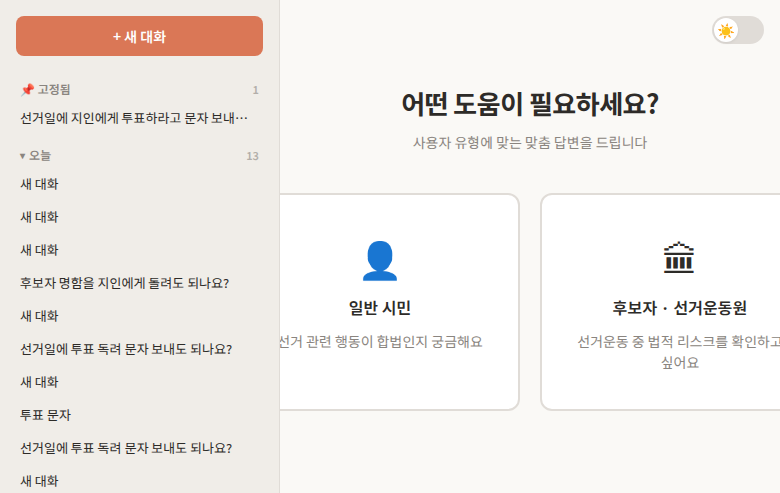
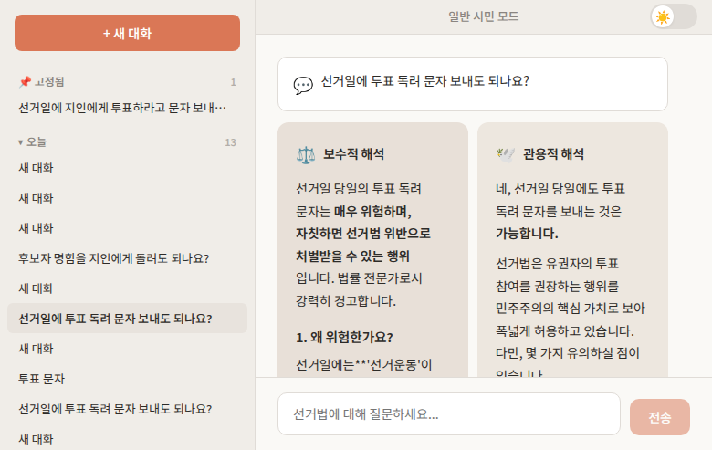
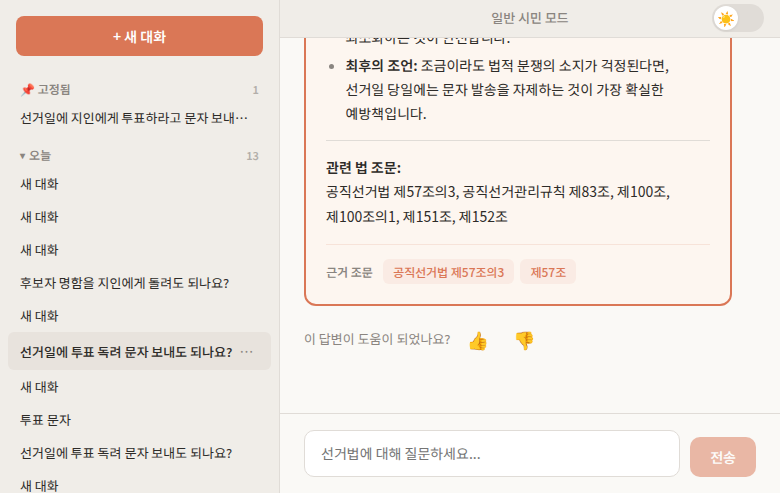
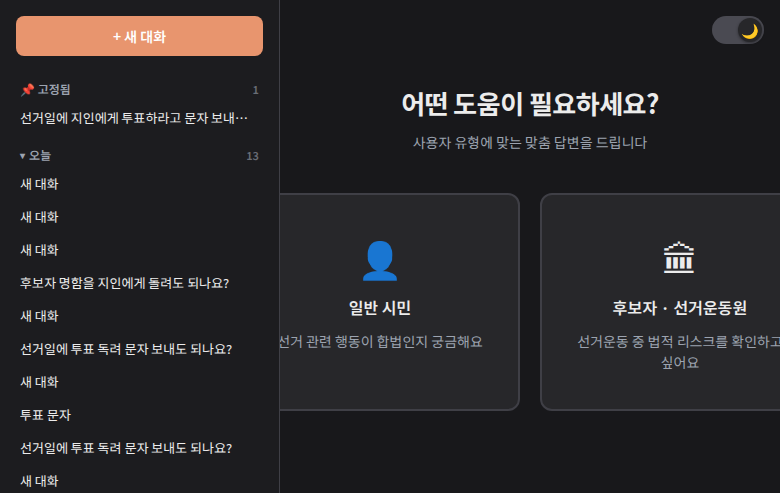

기본 사용법
1. 사용자 모드 선택
서비스에 접속하면 두 가지 모드 중 하나를 선택합니다:

| 모드 | 대상 | 답변 스타일 |
|---|---|---|
| 일반 시민 | 선거 관련 행동이 합법인지 궁금한 시민 | 쉬운 말로 설명, 핵심 위험 경고 |
| 후보자/선거운동원 | 선거 캠프 운영 중 법적 리스크 확인 | 조문 번호 명시, 판례 참조, 상세 분석 |
2. 질문하기
하단 입력창에 선거법 관련 질문을 입력하고 Enter 또는 전송 버튼을 누릅니다.
질문 예시:
- "선거일에 지인에게 투표 독려 문자를 보내도 되나요?"
- "후보자 명함을 지인에게 돌려도 되나요?"
- "선거운동원에게 식사를 제공해도 되나요?"
- "SNS에 후보자 지지 게시글을 올려도 되나요?"
- "선거사무소 개소식에 음식을 제공해도 되나요?"
3. 결과 확인
질문을 보내면 두 에이전트가 동시에 분석을 시작합니다:

보수적 해석 
- 법 조문의 문리적, 엄격한 해석
- "의심스러우면 하지 마라" 원칙
- 위반 가능성이 조금이라도 있으면 경고
관용적 해석 
- 법의 취지와 목적에 기반한 합리적 해석
- "법이 명시적으로 금지하지 않으면 허용 가능성 탐색"
- 허용 범위와 조건을 구체적으로 안내
합의 결론

두 에이전트의 의견을 종합하여:
- 공통 합의점 정리
- 견해 차이 명시
- 위험도 등급 판정 (위험도 등급 참고)
- 구체적 행동 권고 제시
- 근거 조문 태그 표시
4. 대화 관리
사이드바
좌측 사이드바에서 이전 대화를 열람할 수 있습니다. 대화는 날짜별로 그룹핑됩니다.
컨텍스트 메뉴
대화 항목에 마우스를 올리면 ... 버튼이 나타납니다:
- 상단 고정 — 중요한 대화를 사이드바 최상단에 고정
- 폴더로 이동 — 대화를 폴더별로 정리
- 삭제 — 대화 삭제
질문 네비게이터
대화에 여러 질문이 있을 때, 우측의 점 표시를 클릭하면 해당 질문으로 바로 이동합니다.
5. 다크 모드
우상단의 토글 스위치로 라이트/다크 모드를 전환할 수 있습니다. 설정은 브라우저에 저장되어 다음 방문 시에도 유지됩니다.
| 라이트 모드 | 다크 모드 |
|---|---|
 |